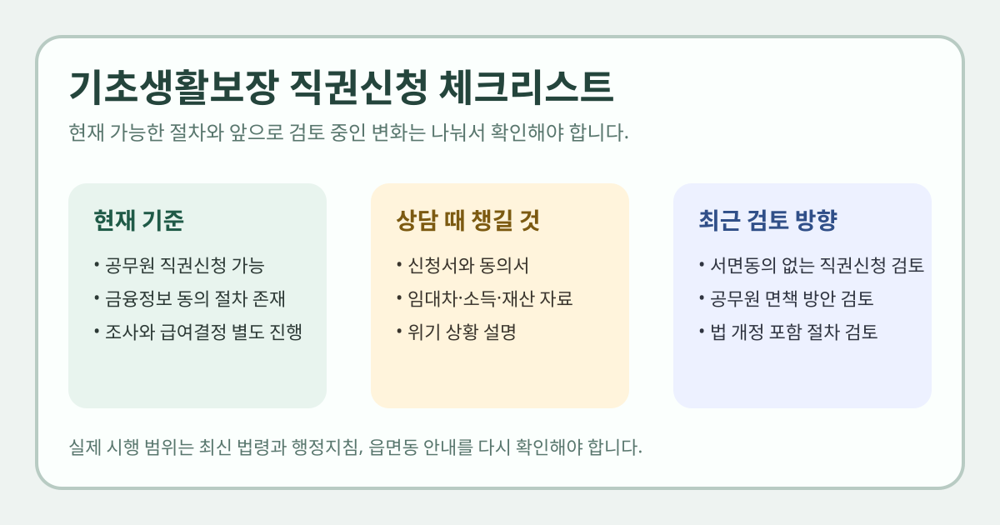

기초생활보장 직권신청을 검색하는 분들은 보통 “내가 직접 신청하지 못해도 주민센터가 대신 시작해줄 수 있나”, “가족이 거부하거나 연락이 어려우면 어떻게 되나”, “지금 바로 달라진 제도인가”를 궁금해합니다. 최근 뉴스는 강하게 보이지만, 실제 제도는 현재 가능한 범위와 앞으로 검토 중인 변화를 구분해서 봐야 합니다.
이 글은 2026년 3월 20일 정책브리핑 기사와 보건복지부 기초생활보장 보장절차 페이지를 기준으로 정리했습니다. 법 개정이나 행정지침이 바뀌면 실제 절차가 달라질 수 있으니, 위기 상황이 있다면 읍면동 행정복지센터 상담과 보건복지부 최신 공지를 반드시 다시 확인하세요.

현재도 직권신청은 가능한가요?
보건복지부의 기초생활보장 보장절차 페이지에는 급여신청 단계에서 수급권자 본인, 친족 및 기타 관계인이 신청할 수 있고, 사회복지담당공무원이 직권신청할 수 있다고 안내돼 있습니다. 민간복지사 등이 저소득가구 보장의뢰를 할 수 있다는 설명도 함께 적혀 있습니다.
즉, 직권신청 자체가 2026년 3월에 처음 생긴 것은 아닙니다. 다만 실무에서는 금융정보 제공 동의 같은 절차가 얽혀 있어 현장 체감이 제한적이었던 부분이 있습니다.
2026년 3월 20일 보도에서 달라진 포인트는 무엇인가요?
정책브리핑은 2026년 3월 20일 보건복지부 현장 점검 소식을 전하면서, 현재도 지방자치단체 공무원이 직권신청할 수 있지만 금융실명법 제4조와 사회보장급여법 제8조 때문에 금융정보 제공 시 본인 동의가 필요하다고 설명했습니다.
같은 기사에는 앞으로 위기 징후 포착 시 당사자 서면동의가 없어도 기초생활보장 급여를 직권신청할 수 있도록 하고, 해당 공무원 면책 방안을 검토하겠다는 내용이 나옵니다. 또 신청주의 한계를 넘기 위한 법 개정과 절차 전반 검토 계획도 함께 언급됩니다.
중요한 점은 이 부분이 이미 확정된 시행 규정인지, 검토 중인 제도개선인지 구분해서 읽어야 한다는 것입니다. 기사 표현상 현재 운용과 향후 개선 검토가 함께 담겨 있습니다.
지금 주민센터 상담 때 무엇을 준비하면 좋을까요?
보건복지부 보장절차 페이지에는 기본 신청서식으로 사회보장급여 제공(변경)신청서와 금융정보 등 제공동의서가 안내돼 있습니다. 필요시 구비서류로는 아래 항목이 예시로 제시됩니다.
- 제적등본
- 임대차계약서
- 소득·재산 확인서류
- 외국인등록사실증명서 등
실제 상담 현장에서는 가구 상황에 따라 추가 자료를 요구할 수 있으므로, 서류를 완벽히 단정하기보다 현재 거주 상태, 가족 관계, 소득 중단 여부, 금융정보 동의 가능 여부를 먼저 설명하는 편이 좋습니다.
직권신청이 필요할 수 있는 경우
- 본인이 직접 신청하기 어려운 고령·질병·위기 상황
- 가족 돌봄 부담, 단절, 은둔 등으로 행정 접근이 어려운 경우
- 이미 공공 복지망 안에 있었지만 신청 단계에서 멈춘 경우
- 민간기관이나 복지사가 위기 징후를 먼저 파악한 경우
다만 직권신청 가능성이 있다고 해서 모든 급여가 즉시 확정되는 것은 아닙니다. 보건복지부 절차상 이후에는 조사, 급여결정, 결정내용 통지, 이의신청 단계가 이어집니다.
신청 후에는 어떤 절차가 이어지나요?
- 급여신청: 본인·친족·기타 관계인 또는 공무원 직권신청
- 조사: 가구 범위, 소득·재산, 공적자료, 금융재산, 생활실태 조사
- 급여결정: 급여 여부와 내용 결정
- 통지 및 이의신청: 통지를 받은 날부터 90일 이내 이의신청 가능
보건복지부 안내에는 급여 종류로 생계급여, 의료급여, 주거급여, 교육급여, 해산급여, 장제급여, 자활급여가 제시돼 있습니다. 따라서 상담 단계에서는 “기초수급” 한 단어보다 어떤 급여가 필요한지를 함께 설명하는 편이 도움이 됩니다.
지금 시점에 보수적으로 이해할 핵심
- 직권신청 제도는 현재도 존재합니다.
- 하지만 금융정보 제공 동의 같은 실무 제약이 있습니다.
- 2026년 3월 20일 보도에는 동의 절차 완화와 면책, 법 개정 검토가 포함돼 있습니다.
- 따라서 “이미 전면 개편 완료”로 단정하기보다 현재 기준과 향후 변화를 나눠 봐야 합니다.
자주 묻는 질문
Q. 내가 직접 신청을 못 해도 공무원이 대신 시작할 수 있나요?
보건복지부 보장절차 페이지에는 사회복지담당공무원의 직권신청이 이미 안내돼 있습니다. 다만 실제 진행 범위는 서류와 동의 절차, 조사 단계에 따라 달라질 수 있습니다.
Q. 최근 뉴스에 나온 내용은 바로 시행된 건가요?
정책브리핑 2026-03-20 기사에는 현재 가능한 제도와 향후 검토할 개선안이 함께 들어 있습니다. 그래서 구체 시행 여부는 최신 법령·지침 공지를 다시 봐야 합니다.
Q. 어디에 먼저 연락하면 되나요?
가장 빠른 출발점은 거주지 읍·면·동 행정복지센터입니다. 위기 상황이면 현재 상태와 신청 곤란 사유를 먼저 설명하고 상담을 받는 편이 좋습니다.
공식 링크
직권신청 가능 범위와 금융정보 동의, 법 개정 검토 내용은 앞으로 달라질 수 있습니다. 실제 상담이나 신청 전에는 거주지 행정복지센터와 보건복지부 최신 안내를 다시 확인하세요.